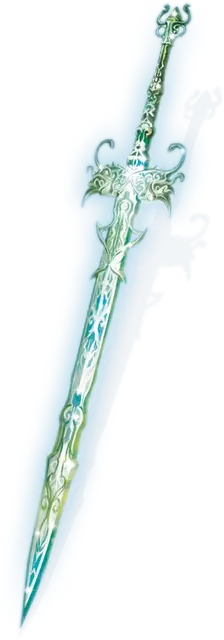

Меч Зариэли
Sword of Zariel
Оружие (длинный меч), артефакт (требуется настройка существом, которого меч считает достойным)

Этот длинный меч принадлежал ангелу Зариэли до её грехопадения. Он выкован из небесной стали, слегка гудит и испускает слабое свечение. Оружие само выбирает, кто может на него настроиться, а кто — нет. Оно жаждет владельца, воплощающего в себе храбрость и героизм.
Настройка. Меч позволяет настроиться на него сразу и без необходимости совершать короткий отдых. Впервые, когда вы настраиваетесь на меч, вашего сердца касаются небеса, и вы превращаетесь в небесную идеализированную версию себя, одарённую неземной красотой. Ни магия, ни божественное вмешательство не могут обратить это превращение вспять. Ваше мировоззрение становится законно-добрым, и вы приобретаете следующие особенности:
Ангельский язык. Вы можете говорить, читать и писать на Небесном.
Небесное сопротивление. Вы получаете сопротивление урону излучением и некротической энергией.
Священное присутствие. Ваше значение Харизмы становится 20, если только она не была больше или равна 20.
Пернатые крылья. У вас вырастает красивая пара пернатых крыльев, дарующих вам скорость полёта 90 футов и способность парить. Если у вас уже есть другой вид крыльев, то новые крылья заменяют старые, которые отпадают.
Истинное зрение. Ваши глаза наполняются серебряным светом. Вы можете видеть в обычной и магической темноте, видеть невидимых существ и предметы, видеть истинный облик перевёртышей и превращённых магией существ и автоматически обнаруживать зрительные иллюзии и преуспевать в спасбросках от них, а также ваше зрение простирается на Эфирный план, и всё это в пределах 60 футов.
Новая личность. Вы приобретаете новые черты личности, определяемые путем одного броска по каждой из следующих таблиц. Эти черты преобладают над любой конфликтующей личностной чертой, идеалом, привязанностью или изъяном.
Личностные черты
| к8 | Личностная черта |
| 1 | Я отношусь ко всем существам, даже к врагам, с уважением. |
| 2 | Я не буду лгать. |
| 3 | Мне нравится делиться своим философским мировосприятием и опытом с другими. |
| 4 | В каждом разговоре я сразу перехожу к делу. |
| 5 | Я часто цитирую (или неправильно цитирую) религиозные тексты. |
| 6 | Я быстро гневаюсь, когда вижу жестокость или несправедливость. |
| 7 | Мою похвалу и доверие надо заслужить, они никогда не даются даром. |
| 8 | Мне нравится, когда все чисто и организованно. |
Идеалы
| к6 | Идеал |
| 1 | Благотворительность. Я всегда помогаю нуждающимся. (Добрый) |
| 2 | Вера. Я предпочитаю следовать догматам определенного законно доброго божества до последней буквы. (Законный) |
| 3 | Ответственность. Долг сильного-защищать слабого. (Законный) |
| 4 | Уважение. Все люди заслуживают достойного обращения. (Добрый) |
| 5 | Честь. То, как я себя веду, определяет мою награду в загробной жизни. (Законный) |
| 6 | Искупление. Все существа способны меняться к лучшему. (Добрый) |
Привязанности
| к6 | Привязанность |
| 1 | У меня есть любимый религиозный гимн, который я постоянно напеваю. |
| 2 | Я должен вести письменные записи верований и грехов, свидетелем которых я являюсь. Когда я закончу, эта книга станет моим подарком мультивселенной. |
| 3 | Я лелею воспоминания об Идилльглене, хотя видел этот сельский городок только во сне. |
| 4 | Я готов умереть за тех, кто сражается рядом со мной, невзирая на их проступки. |
| 5 | Я стремлюсь почтить ангела Зариэль, уничтожая исчадий и другое зло, где бы я его не обнаружил. |
| 6 | Меч Зариэли избрал меня. Я не упущу случая воспользоваться им по справедливости. |
Изъяны
| к6 | Изъян |
| 1 | Я слишком быстро сужу о других. |
| 2 | Я слишком легко прощаю. |
| 3 | Я пожертвую невинными ради общего блага. |
| 4 | Изъян? Какой изъян? Я безупречен. Абсолютное совершенство! |
| 5 | Я ничему не позволю встать на пути моего крестового похода по искоренению зла в мультивселенной. |
| 6 | Я игнорирую тех, кто не поддерживает мои планы, ибо мое призвание выше всех остальных. |
Святой свет. Меч излучает яркий свет в радиусе 5 футов и тусклый свет ещё на 5 футов. Исчадия считают свет меча неприятным и болезненным, даже если они не могут его видеть, и в радиусе яркого света оружия совершают с помехой броски атаки. Бонусным действием вы можете усилить свет меча, заставляя его излучать яркий свет в радиусе 15 футов и тусклый свет ещё на 15 футов, или уменьшить его свечение до обычной яркости.
Случайные свойства. Меч имеет 2 малых положительных свойства.
Обжигающее сияние. Меч наносит дополнительные 9 (2к8) урона излучением любому существу, по которому он попадаёт, или 16 (3к10) урона излучением, если вы держите оружие двумя руками. Злое существо, получившее этот урон излучением, должно преуспеть в спасброске Телосложения Сл 17, иначе станет ослеплённым до конца своего следующего хода.
Разум. Меч Зариэли — это разумный предмет законно доброго мировоззрения с Интеллектом 10, Мудростью 20 и Харизмой 18. Он обладает обычным слухом и зрением в радиусе 30 футов. Оружие общается посредством передачи эмоций существу, несущего или владеющего им.
Видящий истину. Держа меч, вы совершаете с преимуществом проверки Мудрости (Проницательность).
Уничтожение меча. Меч может уничтожить Зариэль, просто взяв его. Она не могла заставить себя сделать это, когда была ангелом, но как архидьявол она без угрызений совести избавит мультивселенную от оружия. Меч также уничтожается, если он используется для сокрушения Компаньона (см. «Shattering the Companion» стр. 154 «Baldur’s Gate Descent Into Avernus»), если только клинок не принадлежит ангелу с ПО 15 или выше, жрецу или паладину по крайней мере 10-го уровня с добрым мировоззрением.
Если Зариэль будет убита навсегда (то есть, если она умрёт в Девяти Преисподних), меч можно будет уничтожить как обычный длинный меч.